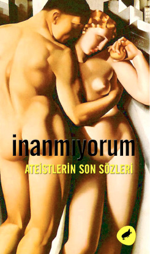

SİVİL İTAATSİZLİK
“En iyi hükümet en az hükmedendir.”
Bu sözü içtenlikle kabul ediyorum ve bu yönde daha sık ve sistematik olarak harekete geçilmesini diliyorum. Sonuçta, açığa çıkan ve benim de inandığım düşünce şudur ki, “Hükümetlerin en iyisi hiç hükmetmeyendir”. İnsanlar hazır olduklarında, hükümetler bu tipte hükümetler haline gelecektir. Hükümet, bir hizmet sunabiliyorsa iyidir, ama çoğu hükümet genellikle ve tüm hükümetler de kimi zaman yersizdir. Sürekli bir ordu fikrine karşı getirilen itirazlar ki bunlar çok sayıda ve ağır itirazlardır ve yürürlüğe girmeyi hak etmektedirler, sürekli bir hükümet için de düşünülebilir. Sürekli bir ordu yalnızca, sürekli hükümetin bir silahıdır. Hükümet, insanların iradesiyle seçilmiş ve bu iradeyi yürüten bir kanaldır, ama halkın iradesinden önce, eşit miktarda istismarı ve sapkınlığı getirir. Sürmekte olan Meksika Savaşı düşünülecek olursa, birkaç kişinin hükümeti kullanarak sağladığı yarar, başlangıçta, bu hükümeti oluşturan insanların iradesi dışında kalmaktadır.
Bu Amerikan hükümeti ki yeni olmasına rağmen bir gelenekten başka bir şey değildir, kendini nesiller boyu yaşatmaya çabalıyor, ancak geçen her bir saniye saygınlığını ve gururunu kaybederek mi gerçekleştirecek bunu? Bir tek kişi onu kendi isteği doğrultusunda kullanabiliyorken, yönetim, tek bir adamın bile canlılığına ve gücüne sahip değildir. Bu, insanlara doğrultulmuş bir silaha benzer. Ama bu yüzden daha az gerekli değildir, insanların sahip oldukları yönetimle tatmin olmaları için, bu makinelerin ateş alması gerekir. Hükümetler, insanların nasıl empoze edileceğini çok iyi göstermektedir, hatta kendi çıkarlarını birbirlerine nasıl empoze edebildiklerini de. Bunu hepimiz kabul etmeliyiz, ama içindeki canlılığı ve gücü kaybetmek dışında hükümet kendi başına hiçbir şey başaramamıştır. Ülkeyi özgür kılamamaktadır. Batıdaki problemleri çözememiştir. Eğitim verememektedir. Tüm bunları, Amerikan halkı başarmaktadır. Daha fazlasını da başarabilirdi tabii, hükümet tarafından yolundan alıkoyulmasaydı. Hükümetin hizmet sunduğu tek şey, insanları yalnızlaştırmak olmuştur ve daha önce belirtildiği gibi, en büyük yararı gösterdiğinde, yönettikleri yalnız kalmıştır. Ticaret ve iş dünyası hint kauçuğuna bağımlı olmasaydı, milletvekillerince sürekli önlerine çıkarılan engelleri asla aşamazdı ve biri bu adamları, niyetlerine göre değil, tamamen yaptıklarının sonuçlarına göre yargılayacak olsaydı, demiryollarına engeller koyarak kazalara sebep olan insanlarla benzer şekilde cezalandırılmaları ve hapse atılmaları gerekirdi.
Ne var ki bir vatandaş olarak konuşacak olursam, kendilerini hükümet karşıtı olarak niteleyenlerin aksine, hükümetin feshedilmesini değil, hükümetin işe yarar olmasını isterim. Herkes, kendi saygısını kazanacak bir hükümet isterse, daha iyi bir hükümete doğru bir adım yaklaşılmış olur.
Sonuçta, gücü elinde bulunduran insanların çoğunluğa göre hareket etmeleri, bunun haklı olduğunu ya da azınlığa göre adaletli olduğunu göstermez. Sadece bu insanların fiziksel olarak çok güçlü olduklarını gösterir. Ne var ki, çoğunluğun yürüttüğü bir yönetim hiçbir şekilde, insanların anladığı şekliyle, adalete dayalı olamaz. Çoğunluğun doğruya ve yanlışa karar vermediği, vicdanlı bir hükümet var olamaz mı? Çoğunluğun yararlılık kuralı göz önünde bulundurularak karar verdiği bir hükümet? Vatandaşın, hiçbir an için milletvekilini vicdani reddi olamaz mı? Niçin vicdan vardır o halde? Ben, önce insan olmamız gerektiğini, daha sonra başka sıfatları edinmemiz gerektiğini düşünüyorum. Yasalara duyulan saygının doğrulara duyulan saygıyı geçmesi istenen bir şey değildir. Hak saydığım tek zorunluluk, her zaman doğru olduğunu düşündüğüm şekilde davranmaktır. Bir kurumun vicdanı olamayacağını daha önce belirtmiştim, ama vicdanlı kimselerden oluşan bir kuruluş, vicdanlı bir kuruluştur. Hukuk asla zerre kadar eşitlik getirmemiştir ve en çok saygı duyulan kararlar bile, adaletsizlik için günlük vasıtalardır. Yasaya duyulan yersiz saygının en yaygın ve doğal sonucu, yüzbaşı, onbaşı, er ve tüm orduyu bir anda hayran olunası bir düzenle dere tepe aşarak, kendi istekleri, kendi mantıkları ve vicdanları dışında, ki bu işi onlar için iyice zorlaştırmaktadır, savaşa gittiğini izlemektir. Onların, kendi istekleri dışında bu lanetli işe dahil olduklarından şüpheleri yoktur. Onlar nedir? Yalnızca birkaç adam mı? Ya da gücü elinde bulunduran vicdansızların hizmetinde hareket edebilen kaleler ve silahlar mı? Deniz kuvvetlerini bir ziyaret edin, bir denizaltını gezin, Amerikan hükümetinin yarattığı bir adam gibi ya da karanlık güçler yaratılmış bir adam olarak; insanlığın soluk bir gölgesi gibi, canlı canlı silahların altına üstelik de cenaze töreni yapılmış bile, gömülmüş, gerçi şöyle de olabilir:
Bir tek ses, bir tek nota dahi yok,
Cesedini surlara taşırken biz;
Tek bir askerden dahi veda atışı yok
Kahramanımızı gömerken biz.
İnsanlar, devlete hizmet etmekte, ama insan olarak değil bedenleri olan makineler olarak. Onlar: Sürekli ordu, asker, gardiyan, memur, yasa uygulayıcı... Çoğu örnekte, duygu ya da düşünce ne olursa olsun, özgürce hareket etmek mümkün değildir; bu insanlar taş gibi toprak gibi değerlendirilmektedir. Aslında, bu hizmetlere koşmak için belki de taştan ve topraktan insanlar üretilmelidir. Onlar ancak atlar veya köpekler kadar değer görmektedir. Kaldı ki, onlar bile saygın bir vatandaş olarak kabul edilmektedir. Diğerleri — milletvekilleri, politikacılar, avukatlar, bakanlar ve ofis sahipleri — devlete üst kademelerde beyinleri ile hizmet edenler, ki çok nadir ahlaki kararlar alırlar, Tanrı diye daha çok, istemeden de olsa, Şeytana hizmet eder gibidirler. Yalnızca çok az insan — kahramanlar, yurtseverler, şehitler, devrimciler ve insanlar — devlete vicdanları ile hizmet ederler ve bu sebepledir ki çoğunlukla direnişle karşılaşır ve düşman gibi görülürler. Bilge bir kişi, ancak bir insan olarak faydalıdır; toprak olarak değil, ama sonunda sadece külleri kalır:
Zengin olmaya geldim bu dünyaya,
Almaya yerini ikincinin,
Faydalı bir aracı, hizmetçi ya da,
Dünyaca güçlü bir devletin.
Kendini tamamen yoldaşlarına adamış bir adam, onlar için faydasız ve bencildir, ama kısmen onların yanında olduğunda, onlara hayırsever ve insancıl görünür.
Bugün, Amerikan hükümetine yakın davranmak bir insan için nasıl olabilmektedir? Cevaplayayım, ancak utanması olmayan biri bunu yapabilir. Benim hükümetim dediğim bu politik kurumun aynı zamanda bir kölenin hükümeti olduğunu düşünüyorum.
Herkes, hükümetin zulmü ve yetersizliği dayanılmaz olduğunda, devrim yapmanın; direniş ve biat etmeyi reddetme hakkı olduğunda hemfikirdir. Ama hemen herkes, şu anda böyle bir durum olmadığını söyleyecektir. 1775 yılında da böyle olduğu düşünülen durum tam şu anki gibiydi. Eğer ki savınız, belli yabancı malların vergisini artırdığı için bu hükümetin kötü bir hükümet olduğu ise, ben bu konuda yaygara yapmazdım, çünkü onlar olmadan da yaşayabilirim. Tüm makineler aşınır ve bu aşınma iyiyi ve kötüyü dengeler diye düşünebiliriz. Her neyse, bu konuda bir karmaşa yaratmak büyük kötülüktür. Ama ne zaman ki aşınma, makinenin kendisi olur, o zaman baskı ve soygun organize olur; böyle bir makinaya ihtiyaç olmadığını söylememe izin verin. Diğer bir deyişle, ne zaman ki özgürlüğün sığınağı olmayı üstlenmiş bir milletin altıda biri kölelerden oluşmaktadır ve tüm ülke yabancı bir ordu tarafından fethedilerek adaletsizce yönetilmekte ve askeri hukuka maruz kalmaktadır, zannımca o ülkede dürüst insanların isyan etmesine ve devrim yapmasına ramak kalmıştır. Durumu daha vahim kılan ise, bize ait olanın bu durumdaki ülke değil işgalci ordu olduğu gerçeğidir.
Ahlaki konuların çoğunda bir otorite olarak kabul edilen Paley, “Sivil Hükümete Teslim Olma Görevi”ndeki bölümünde, faydaya dair tüm sivil yükümlülükleri açıklamıştır ve “tüm halkın çıkarı bunun üzerindeyse ki kamuda rahatsızlık oluşmadan mevcut yönetim değiştirilemez ve karşı durulamaz, artık iş Tanrı’ya kalmıştır… Kabul edilen bu prensip, direnişin her bir örneğindeki adalet bir taraftan bir tehlike ve şikâyet unsuruna indirgenirken öbür yandan telafisinin imkânı ve fiyatıyla değerlendirilir.” Paley bunun, herkesin kendi içinde karar vermesi gereken bir şey olduğunu söylemektedir.
Ne var ki Paley, yararlılık kuralının uygulanmadığı, insanların birey olarak adaleti uygulamak zorunda kaldığı durumları ve bunların bedelini tartışmamıştır. Boğulan bir adamın elinden tutunduğu dalı aldıysam eğer, kendim boğulma pahasına da olsa ona geri vermeliyim. Bu, Paley’e göre uygunsuz bir davranıştır. Ama hayatını kurtaracak olan bu davranış aslında hayatına mal olur. Bu insanlar, köleliği ve Meksika Savaşı›nı durdurmalıdır, çünkü bunlar onların insanlığına mal olmaktadır.
Pratikte, uluslar Paley ile aynı fikirdedir, ama sürmekte olduğu görülen bu krizde, Massachusetts’in doğru olanı yaptığını düşünen var mı?
İşten bile değil,
Gümüşten bir entari ile,
Bir fahişe var etmek,
Ve ruhunu çamurlarda sürümek.
Eğer pratikte söyleyecek olursak, Massachusetts reformuna muhalif olanlar Güneyli yüz bin politikacı değil, oralı yüz bin tüccar ve çiftçidir; bu kimseler, ticaret ve tarımla insanlıktan daha fazla ilgilenmektedirler ve köleliğe ve Meksika’ya, her ne pahasına olursa olsun, adalet getirmeye hazır değildirler. Asıl kavgam, uzaktaki düşmanla değil, en yakında olan ve uzaktaki düşman ile birlik olan ve fırsat sunan düşmanladır ve bu kimseler olmasa, zaten uzaktaki düşmanın hiçbir zararı olamayacaktır. Kitlelerin hazır olmadığını söylemeye alışkınız ve bunun suçunu da azınlıktaki kimselerin yeterince akıllı veya donanımlı olmadıklarından ilerlemeyi yavaşlattıklarında buluruz. Çoğunluğun sizin kadar iyi olması çok da önemli değildir, yeter ki bir yerde bir iyilik olsun, o bütün hamuru mayalamaya yeter. Kölelik ve savaşa fikren karşı olan fakat bunları bitirmek için hiçbir şey yapmayan; Washington ve Franklin’in çocukları olduğuna inanan, ama yine de eli cebinde oturup ne yapacaklarını bilmediklerini söyleyen ve hiçbir şey yapmayan, hatta özgür ticareti insan özgürlüğüne tercih eden ve akşam yemeğinin üzerine sessizce okudukları piyasa haberleri ve Meksika haberleri sonrasında uyuyakalan binlerce insan var. Piyasa haberleri bugün dürüst ve yurtsever birine ne ifade etmektedir? Duraklar ve pişmanlık duyarlar, belki bir dilekçe yazarlar ama etkili hiçbir şey yapmazlar. Beklerken, bertaraf edilmişlerdir, bir başkasının gelip kötülüğü durdurmasını ve bu sayede pişmanlıktan kurtulmayı beklerler. Çoğunlukla, basit bir oy verirler ve Tanrı yanlarından geçip giderken hepsini Tanrı’ya havale ederek tevazu gösterirler. Tek bir güçlü patronun dokuz yüz doksan dokuz güçlü patronu vardır, ama bir şeyin gerçek sahibi ile uğraşmak geçici bekçileri ile uğraşmaktan daha kolaydır.
Oy vermek oyun oynamak gibidir, dama veya tavla gibi, çok az ahlaki düşünceye bağlıdır, ama yanlış ve doğruyu seçmek için ahlaki değerleri sorgulamak gerekir, burada ise bahis eşlik etmektedir. Ama gerekliliği asla faydalılığın gerekliliğini asla geçmez. Doğru olana oy verseniz bile, bu hiçbir işe yaramaz. Bu sadece kimin egemen olması konusunda sizin düşüncenizi gösterir.
Akıllı biri asla doğru olanı şansa bırakmaz ya da doğru olanın çoğunluğun gücü ile iktidara gelmesini beklemez. Ama bazen çoğunluğun tavrında ufak erdem belirtileri görülebilir. Çoğunluk, köleliğin kaldırılması için oy verirse, ya köleliğe karşı kayıtsız olduklarından ya da onların oyları ile kaldırılacak köleliğin zaten çok azalmış seviyede olduğundandır. Sonra, onlar köle olurlar. Sadece onların, kendi özgürlüğünü feda edeceklerin, oyu köleliğin kaldırılmasını hızlandırır.
Baltimore’da ya da bir başka yerde, yapılacak olan, çoğunlukla editörlerin ve profesyonel politikacıların katılacağı başkanlık aday seçimleri kongresini duyuyorum, ama bu seçimden çıkacak kararlar bağımsız saygın ve zeki herhangi bir vatandaş için ne ifade edebilir? Peki biz de o bilgelik ve dürüstlüğe erişemez miyiz? Birkaç bağımsız oya kendimizi mecbur mu bırakmalıyız? Bu ülkede oylamalara katılmayan çokça insan yok mu? Ama hayır: Bu ülkesi hakkında endişelenen adam hemen görevinden alınır ve endişelerden uzaklaştırılır, çünkü ülkesi onun hakkında çok daha fazla endişelidir. O da derhal adaylardan uygun olanı seçer, böylece kendisinin de o lafebesinin amaçlarına uygun olduğunu kanıtlar. Oyu, bir yabancının oyundan ya da satın alınmış bir oydan daha kıymetli değildir. Adam gibi adamlarda, komşumun da dediği gibi, kemikten bir omurga olmalıdır! İstatistiklerimiz hep hatalı: Nüfusun çoğu ülkede bile değil. Metrekareye kaç kişi düşmekte? En fazla bir kişi. Yoksa Amerika, insanlar için yeterince çekici bir yer değil mi? Amerika tuhaf bir adam olmuştur — sürü halinde yaşayan, zekâsı, neşesi ve kendine güveninden yoksun; dünyaya gelmekteki birincil amacı, sağlam düşkünler evleri görmek ve dullara ve yetimlere yardım eden ve onu da düzgünce gömeceğine söz veren ortak sigorta şirketlerine, buna gücü yetmeyecek olsa da para ödemek olan tuhaf biri.
Kendini, büyük ya da küçük, hiçbir yanlışı düzeltmeye adamak, temelde tabii, kimsenin görevi değildir; bundan daha önemli saydığı meşguliyetleri olabilir, ama görevi olan, en azından, kötülüğün içinde olmamak ve artık düşünmek istemiyorsa, kötülüğe hiçbir destek vermemektir. Eğer kendimi bir fikre adayacaksam, en azından önce o fikrin kimsenin hakkını gasp etmediğini görmeliyim. Eğer öyleyse, onu bu durumdan kurtarmalıyım ki hakkını gasp ettikleri de kendi fikirlerini bulabilsin. Hoşgördüğümüz genel uyuşmazlığı görünüz. Bazı hemşerilerimin şunu dediklerini duyuyorum: “Başımızda biri olmalı ki kölelerin ayaklanması önlensin ve Meksika’ya girilebilsin — ben girmeyeceğim nasılsa — ve bu kimseler, doğrudan itaat ederek ya da dolaylı yoldan, en azından para ile buna destek vermekteler.
Adaletsiz bir hükümet ve onu ayakta tutan destekçileri tarafından sebep olunmuş adaletsiz bir savaşa isteksizce gönderilen askerler, kendi davranışlarından bile memnun olmayan kimselerce alkışlanmaktadır, devlet ise bir günahı cezalandırmaktadır, kendi bir tövbekârmışçasına. Böylece biz, Düzen ve Sivil Yönetim adı altında, kendi ettiğimiz kötülüğü desteklemek ve ona saygı duymak zorunda bırakılırız. Günah yüzünüzü bir kez kızarttıktan sonra, alışkanlık yapar, ahlaksızlıktan kayıtsızlığa dönüşür ve sanki kurduğunuz hayatlar için bir gereksinim halini alır.
En büyük ve yaygın hataları, en bilinçsizce yapılmış iyilikler ayakta tutmaktadır. Yurtseverliğin erdeminden dem vuran en hafif sitemlere, büyük çoğunlukla asiller maruz bırakılır. Reformun önündeki en büyük engeller, hükümetin karakterini ve ölçütlerini kabul etmeseler de ona bağlılık gösteren ve destek veren ve böylece şüphesiz ki en vicdanlı destekçileri olanlardır. Bazıları, devlet birliğinin bozulmasını (eyaletlerin ayrılmasını) böylece başkanın yaptırımlarından kurtulmayı istemekteler. Neden bunu, devlet ile aralarındaki birliği bozmayı, kendileri yapmamaktadır? Ve hazineye ödeme yapmaktan vazgeçmemektedir? Eyaletleri ile aralarındaki bağ, Eyaletlerin devlet ile arasındaki bağdan farklı mıdır? Ve kendileri ile Eyaletleri aralarındaki bağın kopmaması, devlet ile Eyaletlerin ayrılamamasına sebep olan nedenlerden farklı mıdır?
Bir kimse nasıl bir tek düşünceye ilgi duyabilir ve onu yaşayabilir? Eğer kullanıldığını düşünüyorsa, bu fikri yine de yaşamalı mıdır? Komşunuz sizi bir dolar bile dolandırsa, bunu söylemede, bunu düşünmeden rahat edemezsiniz ve size paranızı iade etmesini beklersiniz, ama paranızı almak için harekete geçerseniz bir daha aldatılmazsınız. Prensiplerin icraata dökülmesi, doğrunun algılanması ve uygulanmaya konması, ilişkileri ve işleri değiştirebilir; aslında bu devrimsel bir şeydir, eskiye dair hiçbir şey kalmaz. Geçmişte bu, sadece yönetim ve kiliseyi ayırmakla kalmadı, aileleri de ayırdı; bu ayrıca bireyi kendi içinde ayırır; içindeki şeytanı ve Tanrı’yı ayırır.
Adaletsiz yasalar var: bunlara uymalı mıyız yoksa değiştirmek için çaba mı göstermeliyiz? Ya da yasa değişene kadar uymalı mıyız yoksa bir defada çiğneyip geçmeli miyiz? İnsanlar genellikle, böyle yönetimler varken, değişim için çoğunluğun ikna olması gerektiğini düşünür. Eğer tek başlarına direnişe kalkarlarsa, durumun daha kötü olacağını düşünürler. Ama durumun giderek kötüleşmesi, yönetimin suçudur. Reformu anlamak ve buna zemin hazırlamak daha uygun değil midir? Neden yönetimler çözüm sunan azınlığı dikkate almazlar? Neden daha canları bile yanmadan ağlamaya başlarlar? Neden vatandaşları, yönetimin hatalarını bulmaya ve onları düzeltmeye teşvik etmezler? Neden İsa her zaman çarmıha gerilir, Kopernik ve Luther aforoz edilir ve Washington ve Franklin isyancı addedilir?
Kişi, kendi otoritesini kasti olarak reddetmenin kendi hükümetinin tek kötü yanı olduğunu düşünebilir; yoksa neden uygun ve açıkça belli olanı yapmasın? Bir kimse, devlet için 9 şilin kazanmayı bir reddetmeye görsün, bildiğim hiçbir yasanın belirleyemediği, sadece onu oraya koyanların tayin ettiği sürelerce hapse tıkılır, ama aynı kişi devletten 90 kez 9 şilin çalmaya kalktığındaysa, kısa sürede salınıverir.
Eğer adaletsizlik, yönetim makinasında gereken sürtünmeyi yaratan parça ise, atın gitsin, atın gitsin: İşleyiş pürüzsüz olacak ve zaten makinaya hacet kalmayacaktır.. Adaletsizliğin kendi yayı, ipi, kasnağı veya levyesi var ise, o zaman sonuçların çok da kötü olmayacağını düşünebilirsiniz; ama eğer bunların işlemesi için size ihtiyacı varsa, yani siz bir başkasına adaletsizlik getirecekseniz, o halde derim ki, o yasayı çiğnemelisiniz. Bırakın hayatınız işleyen makinayı durduracak karşı kuvvet olsun. Yapmam gereken, hiçbir şekilde tasvip etmediğim bir yanlışa alet olmadığımdan emin olmaktır.
Devletin sorunları çözmek içindir, bildiğim kadarıyla bunun pek fazla yöntemi yoktur. Olanlar da o kadar uzun süreler gerektiriyor ki, insanın ömrü yetmez. Başka işlerim de var. Bu dünyaya burayı yaşanacak bir şey yapmaya değil, iyi ya da kötü, yaşamaya geldim. Bir kişi her şeyi yapamaz, ama bir şeyler yapmış olmalı; çünkü zaten her şeyi yapamaz, yapması da gerekmez ki bir şeyi yanlış yapmasın. Valiye ya da milletvekiline şikâyet dilekçeleri yazmak durumunda değilim, onlar yaptıklarından beni haberdar etmek durumundalar ve şikâyet ettiğimde de duymuyorlarsa ne yapmalıyım? Ama bu durumda devlet hiçbir çözüm sunmamaktadır, çünkü sorun zaten kendi anayasasıdır. Biraz sert, inatçı ve ödün vermeyen bir tavır olarak algılanabilir ancak; sadece hak eden ve değerini bilenlere nazik ve düşünceli olmak gerekir. Yani, her değişim daha iyisi içindir; tıpkı bedeni tamamen sarsan doğum ve ölüm gibi.
Hiç tereddütsüz ifade ediyorum ki, kendilerini kölelik karşıtları olarak niteleyenlerin, maddi ve manevi olarak, daha fazla çoğunluk olmayı beklemeden, Massachusetts yönetiminden tüm desteklerini bir an önce çekmelidirler ki destek verdikleri yönetim onlara cefa çektirmesin. Bence, Tanrı onların yanındaysa, başka destekçiye ihtiyaçları yoktur. Dahası, komşularından daha haklı olan bir kişi, zaten bir kişilik bir çoğunluktur.
Bu Amerikan yönetimiyle ya da temsilcisi Eyalet yönetimiyle, vergi memuru tezahüründe, yüz yüze yılda bir kez, daha fazla değil, görüşüyorum; bu da benim gibi birinin devlet ile görüşebileceği tek durumdur ve kesinlikle hatırlatayım, en basit, en etkili ve işlerin gidişatına bakılırsa en zaruri şekli ile durumla başa çıkmak için kendimce, sonrasında reddetmek üzere, ona karşı çok az sevgi ve tatmin duyduğunuzu belirtmektir. Sivil komşum, vergi memuru, bu durumda uğraşmak zorunda kaldığım tek kişi — yani bir kâğıtla değil bir insanla tartışırım — çünkü kendisi bu görevi gönüllü olarak sürdürmektedir. Görevi itibariyle beni elimine edilmiş bir manyak ya da huzuru bozan bir kimse olarak değerlendirmesi emredilmişken, bir insan ve komşum olarak beni saygıdeğer bir komşusu gibi değerlendirmeyi ve bunu kabalık etmeden veya aceleyle geçiştirmeden, sözlerine veya davranışlarına yansıtmadan nasıl başarabilir? Şunu iyi biliyorum ki, eğer bin, yüz ya da on kişi bulabilirsek şu Massachusetts’te— sadece on dürüst kişi kölelerinden vazgeçerse, bu yardakçılıktan gerçek anlamda sıyrılırsa ve bunun için hapse atılmayı göze alırsa, bu; Amerika’daki köleliğin sonu olur. Küçük bir başlangıç olarak görünebilir: bir kez tam yapılmış olan, sonsuza dek kalır. Ama biz bundansa sadece konuşmayı tercih ederiz: bizim görevimizin bu olduğuna inanırız. Reformcu pek çok gazete vardır ama tek bir kişi yoktur. Eğer benim değerli komşum, devletin temsilcisi, günlerini insan hakları meselesinin mecliste görüşülüp uzlaşma yollarına açılmasına adayan, Carolina’daki hapis tehdidine karşın ablasının köleliği günahının üstüne kalacağından endişeli Eyalet Massachusetts’te yaşayan bir mahkûm olarak — gerçi şu anda kendisi ile tek kavga sebebi kendisinin soğukluğudur — milletvekili gelecek kışın konusundan feragat etmeyecektir.
Adaletsiz cezalar dağıtan bir yönetimde, adaleti savunan birinin de yeri hapishanedir. Uygun yer, Massachusetts’in özgür ve umutlu vatandaşlarını için uygun gördüğü tek yer, hapishanelerdir; onları elimine eder ve göz önünden kaldırır çünkü zaten onlar kendi prensiplerine uygun yaşayarak kendilerini elimine etmişlerdir. Orası, kaçak bir kölenin, şartlı tahliye edilmiş bir Meksikalının ya da yanlışları yüze vuran bir Kızılderilinin bulunabileceği yerdir; bu ayrı ama onurlu yer, devletin onun kurallarına göre yaşamayanları koyduğu, bir kimsenin onurunca bir yaşam süreceği tek evdir. Eğer birisi, orada nüfuzunu kaybedeceğini ve devlete artık sesini duyuramayacağını düşünüyorsa, duvarlar ardındaki düşman olmak istemiyorsa, ne gerçeğin yanlışın karşısında ne denli güçlü olduğunun ne de kişi kendi haksızlıkla karşılaştığında savaş vermekte tereddüt etmeyeceğinin bilincindedir. Oyunuzu verin ancak, onu sırf kâğıt parçası olarak görmeyin, tüm nüfuzunuzu kullanarak oy verin. Çoğunluğun isteklerine uyan bir azınlık güçsüzdür; o zaman azınlık bile değillerdir, ama tüm güçleri ile durduklarında karşı gelinemez olurlar. Eğer alternatifler, herkesi hapse tıkmak ve köleliği ve savaşı bitirmek olursa, devlet hangisini seçeceğinde tereddüt etmez. Eğer bin kişi bu yıl vergileri ödemeyi reddetse, bu vergilere razı olmaktan daha vahşi ve kanlı bir ölçüt değildir, onlar değil, devlet vahşileşmiş ve masumlara kastetmiş olur. Bu, aslında, barışçıl bir devrimin tanımıdır, eğer böyle bir şey gerçekten mümkün ise. Vergi memuru ya da herhangi bir memur, “Ben ne yapayım?” diye soracak olursa, cevabım şudur; “eğer gerçekten bir şey yapmak istiyorsan, istifa et.” Ne zaman ki insanlar bağlılığı reddederse ve memurlar istifa ederse, o zaman devrim tamamlanmış olur. Ama yine de kan akacaktır. Ama vicdanlar yaralandığında da kan akmış sayılmaz mı? Bu yaralar, insanlık kanar ve sonsuza dek ölür. Şu anda benim gördüğüm tam da budur.
Kişiyi hapsetmenin, onun malına el koymaktan daha iyi olduğunu düşünürüm — ki zaten ikisi de aynı amaca hizmet etmektedir — çünkü gerçek hak savaşçılarının, devleti en çok zora sokanların, zaten mal mülk edinecek vakitleri olmamıştır. Bu kimselere, özellikle el emeği işçilerine, devlet özellikle az hizmet vermeyi ve az vergi istemeyi alışkanlık haline getirmiştir ki, durum gözlerine batmasın. Özellikle hiç para kullanmadan yaşayan biri olsaydı, devlet ondan nasıl vergi alacağını düşünürdü. Ama zenginler — kişisel bir karşılaştırma olarak algılanmasın — kendini zengin eden kuruma satılmıştır. Kesin konuşmak gerekirse, çok para az erdem demektir; para, insan ile objeler arasında araçtır, insanı pek çok objenin sahibi yapar ve bunları edinmek kesinlikle bir erdem değildir. Para, pek çok soruyu göz ardı ettirir, ki tersi durumda vergiye tabii olacaktır, ama yarattığı yeni bir sorun vardır, ki en zor ve lüzumsuz sorudur, paranın nasıl harcanacağı. Böylece ahlaki zemin, ayaklarının altından çekilmiştir. “Ortalama” olarak nitelenenler arttıkça, yaşam şansı azalır. Bir zenginin kendi kültürü için yapabileceği en iyi şey, fakirken yaptığı ve zevk aldığı şeyleri yapmaya devam etmektir. İsa, Herodianlara bu konuda şunu demiştir: “Bana parayı gösterin” demiş ve cebinden bir peni çıkarmıştır, — eğer üzerinde Sezar’ın resmi olan ve onun değerli ve geçerli kıldığı bir parayı kullanıyorsanız, yani devletin adamı iseniz ve Sezar’ın yönetiminde olmaktan memnun iseniz, o zaman istediğinde Sezar’ın hakkını Sezar’a geri vermelisiniz. “Sezar’ın olanları Sezar’a, Tanrı’nın olanları Tanrı’ya teslim edin.» Hiçbirini, bilmek istemediklerini vererek, eskisinden iyi konuma getirmeyin.
En özgür komşumla görüşmelerimde, şunu anlıyorum ki, sorunun büyüklüğü ve ciddiyetiyle ilgili ya da halk huzuru ile ilgili ne düşünürlerse düşünsünler, eninde sonunda, ailelerinin veya mülklerinin başlarına geleceklerden korktukları için, direnişi değil yönetime uymayı tercih ediyorlar. Kendi adıma, devleti korumanın daha iyi olacağı hissine bir an bile kapıldığımı düşünmek bile beni rahatsız eder, ama vergi ibrazı ile karşılaştığımda devlet otoritesini reddedersem, çok geçmeden mallarıma el koyacak ve beni ve çocuklarımı ebediyen rahatsız etmeye başlayacaktır. Bu zordur. Bu, kişinin dürüstçe ve aynı zamanda huzurla, yaşamasına engel teşkil eder. Bu şekilde kaybedeceğinden emin olduğun mülkü edinmeye uğraşmak, harcayacağınız zamana değmez. Kiralamalı ya da bir gecekonduda yaşamalısınız, küçük bir alanda ekip biçmeli ve hasadı kendiniz kullanmalısınız. Kendi içinizde yaşamalı ve kendinize her an yeni başlangıçlar yapmaya hazır halde, güvenmelisiniz ve çok fazla ilişki kurmamalısınız. Bir kimse, eğer hükümetinin yoluna taş koymaz ise Türkiye’de bile zengin olabilir. Konfüçyüs, “Eğer bir devlet akıl ve mantık ile yönetiliyorsa, umutsuzluk ve fakirlik utanç kaynağıdır; eğer bir devlet akıl ve mantık ile yönetilmiyorsa, zenginlik ve onur, utan kaynağıdır.” Der. Hayır: Massachusetts yönetimi korumasının doğuda uzak bir noktada, tehlike altındaki özgürlüğüme kadar uzanmasını isteyene kadar ya da huzurla yaşamak için bir ev inşa ederek ona muhtaç kalana kadar; Massachusetts’i ve benim mülküm ve canım üzerindeki hakkı onaylamayı reddediyorum. Devlete itaatsizliğin götürüsü, itaat etmenin götürülerinden her zaman daha azdır. Bu durumda kendimi daha az değerli hissetmeliyim.
Birkaç yıl önce devlet kilise adı altında, karşıma çıktı ve benden geçmişte babamın katıldığı fakat benim hiç katılmadığım vaazları veren vaize destek olarak toplu bir miktarda para talep etti. “Öde,” dedi, “ya da hapse girersin.” Ödemeyi reddettim, ama maalesef, benim yerime ödedi. Neden bir okul müdürünün papazı desteklemek zorunda olduğunu, ama papazın okul müdürünü desteklemek zorunda olmamasını anlayamıyorum; tabii ben okul müdürü değilim ama gönüllü olarak kendi kendimi destekliyorum. Liselerin neden kiliseler gibi vergi toplamadıklarını merak ediyorum. Yine de, konsey üyesinin talebiyle, şöyle bir yazı yazdım. «Biliniz ki, ben, Henry Thoreau, katılmadığım hiçbir tüzel topluluğun üyesi sayılmak istemem.” Kasaba kâtibine bunu teslim ettim. Böylece devlet, benim o kilisenin bir üyesi olmak istemediğimi öğrenmiş oldu ve önceden yaptığının tersine, bir daha böyle taleplerde bulunmadı. Daha önceden bilseydim, bilgim dışında üye edildiğim tüm topluluklardan çıkardım; ancak böyle bir listeye nereden ulaşacağımı bilmiyordum.
Altı yıldır hiç seçim vergisi ödemedim. Bu sebeple bir kez hapse girdiğimde, bir gece; ayakta durmuş taş duvarlara bakıp düşünmekteydim; iki ya da üç fit kalınlığında taş duvarlar, bir fit kalınlığında tahta ve demirden yapılmış bir kapı ve içeri ışık girmesini sağlayan demir parmaklıklı bir pencere. Parmaklıklar ardına tıkılmıştım, beni sanki sadece et, kan ve kemikten oluşuyormuş gibi gören kurumun aptallığı yüzünden ve elimden bir şey gelmiyordu. Sanırım bu, benden sağlayabileceği tek yarar olarak görünmüştü ve asla benden fayda sağlayacak başka yollar aramamıştı. Şunu anladım ki, ben ve diğer kasabalılar arasında kalın duvarlar vardı, ama onların benim gibi özgür olabilmeleri için kırmaları ya da tırmanmaları gereken daha kalın duvarlar vardı. Asla kısıtlanmış hissetmiyordum, duvarların yapıldığı taş ve harç bana büyük bir ziyan gibi görünüyordu. Sanki, kasabada tek vergisini ödeyen benmişim gibi hissediyordum (tek doğru yapan benmişim gibi hissediyordum). Bana nasıl davranacaklarını bilememişler ve görgüsüzlük etmişlerdi. Her tehditte veya komplimanda bir pot vardır; onlar da benim esas isteğimin duvarın öte tarafında olmak istediğimi sanmışlardı. Bir hevesle üzerime kapıyı kapadıklarında, gülümsememe engel olamadım; hiçbir engel çıkarmadan sakince onların dışarı çıkmalarını izledim, sanki asıl tehlike arz edenler onlarmış gibi. Sanki bana ulaşamadıklarından bedenimi cezalandırıyorlardı; tam da karşı gelemedikleri büyüklerine kızıp acısını köpeklerinden çıkaran küçük çocuklar gibi. Gördüm ki devlet ahmaktı, gümüş kaşığıyla (miras kalan zenginliği) yalnız bir kadın kadar cesaretsizdi, dostunu düşmanından ayıramıyordu ve böylece ben ona karşı kalan tüm saygımı da kaybettim ve haline acıdım.
Yani devlet asla bir kimsenin aklı ile, entelektüel ve ahlaki yönden, yüzleşemez; yalnızca bedeni ve duyuları ile yüzleşebilir. Akıl veya dürüstlük olarak değil yalnızca fiziksel güç olarak üstünlüğü vardır. Bu dünyaya zorlanmak için gelmedim. Kendi ritmimle nefes alabilmeliyim. Kim en güçlü imiş, görelim. Hangi gücün büyüklüğü vardır? Onlar beni sadece benden daha üstün bir yasaya uymaya zorlayabilirler. Beni kendileri gibi olmaya zorlamaktalar. İnsanların çoğunluk tarafından şu ya da bu şekilde yaşamaya zorlanmasını anlamıyorum. Hayat ne şekillerde yaşanır? Eğer yönetim bana “paranı ya da canını” derse, neden ivedilikle paramı vermeliyim? Büyük bir darboğazda ve ne yapacağını bilmiyor olabilir: elimden bir şey gelmez. Sorunu kendi çözmeli; benim yaptığım gibi. Yakınma ile harcanacak zamana değmez. Toplum makinasının düzgün çalışmasından sorumlu değilim. Bir mühendis çocuğu değilim. Şunu biliyorum ki, bir meşe ile kestane yan yana büyümeye başladığında, biri diğerine yol vermek zorunda değildir, her ikisi de kendi doğalarına uymalı, ellerinden geldiğince büyümeli ve tohum sürmelidir, ta ki, tesadüf eseri, biri diğerini gölgede bırakıp mahvedene kadar. Eğer bir bitki doğaya uygun yaşayamıyorsa, ölür; tıpkı insanlarda olduğu gibi.
Hapisteki gecem değişik ve ilginçti. İçeri girdiğimde, mahkûmlar sohbet ediyorlardı ve akşam çökmek üzereydi. Ama gardiyan, “Hadi, süre doldu.” Diyerek onları içeri çağırdı, sonra boş apartmanlarına dönerken ayak sesleri duyuldu. Gardiyan, hücre arkadaşımı “birinci sınıf bir dost ve zeki bir adam” olarak tanıştırdı. Kapı kitlendiğinde, arkadaşım bana ceketimi nereye asabileceğimi gösterdi ve buradaki işlerin düzeninden bahsetti. Odalar ayda bir boyanıyordu ve bu oda, en azından, en beyazıydı, basit eşyalar yerleştirilmişti ve muhtemelen kasabadaki en düzenli apartmandı. Doğal olarak arkadaşım nereli olduğumu ve neden buraya düştüğümü merak ediyordu; ona anlattım ve ben de ona sordum; dürüst bir adam olduğunu düşünerek, tabii ve inanıyorum ki öyleydi. “Neden” dedi, “Beni bir samanlığı yakmakla suçladılar, ama böyle bir şey yapmadım” Öğrenebildiğim kadarı ile, sarhoşken bir samanlığa girip uyumuş ve orada piposunu içerken samanlar alev almıştı. Zeki biri olarak biliniyordu, yaklaşık üç aydır buradaydı ve davasının görülmesini bekliyordu ve daha da bekleyecek gibi görünüyordu, ama duruma alışmış ve halinden memnun gibiydi, sanki bedavaya kalacak yer bulmuş ve iyi bakıldığını düşünür gibiydi.
Pencerelerden biri onun, diğeri benimdi ve gördüm ki eğer biri burada yeterince kalırsa, başlıca işi pencereden dışarı bakmak olur. Zamanla odadaki izleri inceledim, daha önceki mahkûmlarım kaçmaya çalışırken bıraktıkları izleri gördüm, parmaklıklarda sonradan kapatılmış bölümü gördüm ve odanın eski sakinlerinin hikâyelerini dinledim; burada bile bir tarih ve asla dışarı çıkmamış dedikodular vardı. Muhtemelen burası, kasabada besteler yapılan tek yerdi; bu besteler sonra duvarlara yazılmış ancak hiç yayımlanmamıştı. Kaçmaya çalışanların uzun listesini gördüm, bu şarkılar onların rövanşlarıydı.
Bir daha göremeyeceğimi düşünerek hücre arkadaşımdan öğrenebildiğim her şeyi öğrenmeye çalıştım, ama bana sadece yatağımı gösterip, yatağına çekildi.
Bu sanki daha önce gideceğimi hiç tahmin etmediğim uzak bir ülkeye bir gecelik bir ziyaret gibiydi. Daha önce kasaba saatinin sesini duymadığımı fark ettim, kasabada akşam seslerini duymadığımı fark ettim; camlar açık uyuduk. Sanki kendi kasabamı Orta Çağdan bir yermiş gibi duyuyordum, evler sanki Ren nehrinin kıyısındaydı, kaleler ve şövalyeler geçiyordu gözlerimin önünden. Sokaklardan eski kasaba sakinlerinin sesleri geliyordu. İstemeden de olsa yan odada oturmuş her şeyi duyan ve gören kişi olmuştum. Benim için nadir ve yeni bir deneyimdi. Kendi kasabamı daha yakından izliyordum, Sanki içinden değildim. Onun kurumlarını daha önce hiç görmemiştim. Burası da, kasabamın idari yönüne ait olduğu için, özel bir kurumdu. Belde halkının neler ile ilgilendiğini anlamaya başlamıştım.
Hapisten çıktığımda — biri araya girip benim yerime vergiyi ödemişti — göz önünde olan biteni görememişim, o gençken girip beyaz saçlarla çıkanları görmüştü; bu kısa sürede ben bile bir değişime tanık olmuştum — kasaba, devlet ve ülke, normal zamanda fark edemeyeceğim bir şey. Yaşamakta olduğum devleti daha belirgin halde görmüştüm. Aralarında yaşadığım insanların nereye kadar komşu ve arkadaş olarak güvenilir olduklarını gördüm; arkadaşlıkları yalnızca yazlık havalar içindi, her zaman doğrudan yana olmak niyetleri yoktu, inançları ve önyargıları ile tıpkı Çinliler ya da Mayalar gibi, benden tamamen ayrı bir ırktılar, insanlık adına hiçbir riske girmiyorlardı, mülklerine bile zarar gelsin istemiyorlardı, çok asil değildirler ama hırsız onlara karşı nasıl davranıyorsa onlar da hırsıza karşı aynıydı ve kendilerini koruyup kollaması için daima dışarıdan bir güce dua ediyorlar, onun yolunda, faydasız da olsa, yürüyorlar ve umut ediyorlardı. Bu, komşularımı acımasızca yargılamak gibi görünebilir ama çoğunun hapishane gibi bir yerin varlığından bile haberdar olmadıklarına inanmaktayım.
Kasabanın eski adetlerinden biri, borçlu kimse hapisten çıktığında tanıdıklarınızın parmaklarını çapraz yaparak, hapsi ima ederek, “Nasıl gitti?” demesidir. Komşularım beni böyle selamlamadı, ama bana kaçamak bir bakış atıp yanlarındakine döndüler, sanki çok uzun bir yolculuktan dönmüşüm gibi. Beni hapse götürmelerinden önce, tamirciden onarılmış ayakkabımı almaya gidiyordum. Ertesi sabah salıverildiğimde, yarım kalan işlerimi tamamladım ve onarılmış ayakkabılarımı giydim, bir üzüm festivaline katıldım, beni bekliyorlardı, yarım saat içinde —atları kaçırmamak için— festival alanının tam ortasındaydım, festival yeri en yüksek tepelerden birindeydi, kasabanın 2 mil dışında, devletin hiçbir yerden görünmediği bir yerdi.
İşte, “hapishane” hikâyem böyleydi.
Hiçbir zaman karayolları vergisini ödemeyi reddetmedim, çünkü devletin kötü bir yardakçısı olmayı istediğim kadar iyi bir komşu olmak isterim ya da okulları desteklemek için, kasabadan kişilerin eğitimi için kendime düşeni yapmaktayım. Vergiyi ödemeyişim verginin sebebi değildir. Ben, temelde, devlete bağlılığı reddetmekte, ondan mümkün olduğunca uzak durmak istiyorum. Dolarları takip etmeyi umursamıyorum, ta ki bir adam tutup bir tüfek alıp birini vurana kadar —dolar masumdur— ama bağlılığımın etkilerini görmek ve takip etmek isterim. Aslında, devlete karşı sessizce savaş açmış durumdayım, tavırlarımla, yine de ondan alabildiğim kadarını almak isterim, tıpkı bu durumlarda yapıldığı gibi.
Eğer diğer kimseler benden istenmiş vergiyi ödüyorlarsa, devletin istemlerine uygun olarak, bu zaten yapmakta oldukları bir şeydir ya da haksızlığa devletin onlardan beklediğinden çok daha büyük ölçüde destek vermektedirler. Eğer hatalı bir vergi bildirimini ödüyorsa bu, mülkünü korumak için ya da hapse girmek istemediğindendir, çünkü bu özel korkularının halkın iyiliğini ne denli etkilediğini etraflıca düşünmemektedirler.
O vakit, benim duruşum budur. Ama kişi böyle bir durumda tavrının insanlar tarafından dik başlılık veya yasadışı olarak algılanması korkusuyla kendini çok fazla koruyamamaktadır. Kişi görmelidir ki, yalnızca kendine ve vaktine uygun olanı yapmaktadır.
Bazen, neden bu insanlar iyi niyetli olduklarını söylerler merak ediyorum, kabalar, ne yapacaklarını bilseler belki daha iyi olurlar: neden komşularının kendilerine davranışlarını komşularının eğilimine bırakmıyorlar? Ama sonra derim ki, ben zaten onlar gibi davranmıyorum ya da başkalarını buna zorlamıyorum. Yine, kendi kendime derim ki milyonlarca insan, öfke olmadan, kötü niyet olmadan, kişisel hiçbir çıkar olmadan, sadece birkaç şilin istese, hiçbir şekilde, anayasaları gibi, isteklerini geri çekmese ve hiçbir şekilde, sizin karşı, diğer milyonları kışkırtmasa, neden bu ezici kaba kuvvete kendinizi maruz bırakasınız ki? Açlığa ve soğuğa direnmezsiniz, rüzgâra ve dalgalara da, böylece inatla; sessizce binlerce aynı gereksinime katılıyorsunuz. Kendinizi ateşe atmazsınız. Ama karşılaştırmak gerekirse bu tamamen ezici bir güç değil, kısmen insanı bir güçtür ve bu milyonlar ile bir ilişkim olduğunu düşünürüm, tıpkı diğer milyonlarca insanla olduğu gibi, basit vahşi şeylerle veya cansız şeylerin tersine, bu karşı gelişin mümkün olduğunu düşünüyorum, önce kendilerinden onları yaratana ve daha sonra kendilerinden kendilerine dönecek şekilde. Ama kasten kendimi ateşe atarsam eğer, burada ateşe ya da yangını çıkarana bir itirazım olamaz, tüm suç bendedir. Eğer kendimi insanları oldukları gibi kabul etmeye ikna edebilseydim ve buna göre davranabilseydim ve kimi konularda, nasıl olmamız gerektiğiyle ilgili benim beklentime ve taleplerime uygun olmalarını beklemeseydim, o zaman iyi bir Müslüman ya da kaderci kimseler gibi, olan biteni olduğu gibi kabul eder ve bunu Tanrının isteği olarak atfederdim. Ve tüm bunlardan önce, buna ve tamamen vahşi ve doğal bir güce karşı durmak arasında fark vardır, ilkine bir raddeye kadar karşı gelebilirim ama ikincisine, Orpheus gibi, kayaların, ağaçların veya canavarların doğasına hiçbir etkim olamaz.
Hiçbir kimse ya da toplulukla kavga etmek istemem. Herhangi bir ayrıma, ayrılığa veya kendimi komşularımdan daha üstün gördüğüm izlenimine mahal vermek istemem. Daha ziyade, diyebilirim ki, yasaların gerekli olabileceğine dair bahaneler aramaktayım. Onları haklı göstermek için her şeye hazırım. Aslında, kendimden dahi şüphe ederim ve her yıl, vergi memuru geldiğinde, kendimi devletin ve tüm yönetimlerin duruş ve icraatını değerlendirmemem için bertaraf edilmiş hissederim ve insanların rahatlık için bahaneler bulmaya çalıştığını düşünürüm.
Ülkemizi ailemiz gibi görmeliyiz,
Eğer ki yabancılaşacak olursak sevgiye
Ya da meşguliyetimizde onur kalmazsa
Sonuca katlanmalı ve ders çıkarmalıyız
Vicdan ve inancı öğrenmeliyiz
Güce ve çıkara tamah etmemeyi.
İnanıyorum ki yakında devlet tüm işime engel olacak ve diğer vatandaşlardan bir farkım kalmayacak. Daha aşağıdan bakacak olursak, anayasa, tüm hatalarına rağmen, oldukça iyidir; hukuk ve mahkeme hala saygı uyandırmaktadır; hatta bu yönetim ve Amerikan hükümeti de, pek çok açıdan, hayranlık uyandırmaktadır ve nadiren, minnettarlık uyandırır ki bunları anlatan pek çok kimse vardır; daha uzaktan bakacak olursak ya da en uzaktan, bunların ne olduklarını kim söyleyebilir ya da bakmaya ve hakkında düşünmeye değecek şeyler midir?
Bununla birlikte, hükümet beni çok fazla kaile almamaktadır ve ben de onu mümkün olduğunca az düşünmeliyim. Bu dünyadayken bile, bir yönetim altında yaşadığım süre sayılıdır. Eğer kişi düşünemiyorsa, hayal gücü ve arzuları yoksa ki bu asla uzun sürecek gibi görünmemektedir, akılsız hükümdarlar veya reformcular onu sonsuza kadar engelleyemezler.
Biliyorum ki, çoğu insan benden farklı düşünüyor, ama hayatı profesyonel manada bu ve bunun gibi konuları araştırmaya adanmış olanlar benden hiç ama hiç memnun değiller. Devlet adamları ve milletvekilleri, kurumun içinde boylu boyunca yer alanlar, asla açıkça ve belirgin biçimde onu göremezler. Toplumu ileri götürmekten bahsederler ama nereye vardıracaklarını bilmemektedirler. Belli bir tecrübeye ve imtiyaza sahip olabilirler ve şüphesiz çokça işe yarayan ve bizim de bunlar için samimi teşekkürlerimizi sunduğumuz sistemler geliştirmişlerdir, ama yine de akılları ve işe-yararlılıkları belli sınırları aşamamaktadır. Dünyanın çıkarlarla ve politika ile yönetilen bir yer olmadığını unutmaya alışmışlardır. Webster, hükümetin peşi sıra gitmemektedir ve bu yüzden onun otoritesiyle konuşmaz. Onun sözleri, mevcut hükümetle ilgili hiçbir reform düşünemeyen milletvekilleri için bilgecedir, ama düşünenler için ve her zaman görevini yapanlar için diyecek sözü yoktur. Bu konudaki açık ve derin spekülasyonlarıyla aklının ve mantığının sınırlarını ortaya koyan kişiler tanırım. Yine de, çoğu reformistin ucuz işleriyle ve politikacıların çok daha ucuz laf salatalarıyla karşılaştırılırsa, onlarınki en hassas ve ne değerli sözlerdir, Tanrı onları korusun. Her şeyden önce o, hepsinden güçlü, özgün ve pratiktir. Yine de, kalitesi aklından değil sağduyusundan gelir. Avukatların gerçeği, gerçek değildir, tutarlılık ya da tutarlı bir faydadır. Gerçek daime kendi içinde uyumludur, yanlışlardan adaleti ortaya çıkarmayı beklemez. O, zaten bilindiği gibi, Anayasa Savunucusu olarak bilinmelidir. Savunma dışında yapacak bir şeyi yoktur. O bir lider değil takipçidir. Onun liderleri 287 kuşağıdır. “Hiçbir zaman bir çaba sarf etmedim” der “ve asla böyle bir niyetim de olmadı; pek çok Eyaletin birleşerek oluşturduğu birlik düzenin bozmak için hiçbir zaman çaba göstermem için teşvik edilmedim ve bu yönde hiçbir çabayı da teşvik etmedim.” Hala anayasanın köleliğe karşı yaptırımlarını düşündüğünde, “Bu en baştan beri olan bir şey — bırakalım devam etsin,” der. Tüm uyanıklığına ve yeteneklerine rağmen, bunun politik ilişkilerini anlayamamaktadır ve mantık dışı bir şey olduğunu görmezden gelmektedir — kişinin Amerika’da kölelik için yapılması gerekenleri — ama şu soruya işe yaramaz cevaplar üretmek üzere, hem de kesin konuşmalarla, özel olarak işe girişir ya da işe sürülür — başka nereden yeni ve eşsiz sosyal vergiler türetilebilir? “Yöntem” der, “Köleliğin geçerli olduğu Eyaletlerde, bu Eyalet yönetiminin kararına bağlıdır, onun sorumluluğunda ve mülki insan hakları, adalet ve Tanrı’nın koyduğu kanunlara bağlıdır.” İnsanlık düşüncesinden ya da başka bir sebepten doğmuş ve bu konuya ilişkisi bulunmayan ortaklıklar başka yerde kurulmuştur. Benden hiçbir zaman destek görmemişlerdir ve göremeyeceklerdir.
Gerçeği, kaynağında kadar takip ederek ortaya çıkaranlar, Kutsal Kitabın ve Anayasanın yanında dimdik dururlar ve saygıyla ve insanlıkla özümserler, ama diğerleri, hemen önlerindeki havuza ya da göle damla damla döküldüğünü görenler, paçalarını bir daha sıvar ve damlaların geldiği yönde yola devam ederler.
Amerika’da devlet yönetiminde hiçbir dahi çıkmamıştır. Dünya tarihinde de böyle dâhiler nadirdir. Hatipler vardır, politikacılar ve dilbaz binlerce kimse vardır ancak, mikrofonlar henüz tartışmaya değer sorular soranlarına rastlamamıştır. Hitabeti severiz, ama bunun gerçeği söylemekle ya da hiçbir kötülüğe ilham vermekle ilgili olmadığını biliriz. Bizim milletvekillerimiz serbest piyasa ile bir birliğin özgürlüğü ve bir ulusun saygınlığı arasındaki karşılaştırma değerini henüz öğrenememiştir. Vergiler ve finans, ticaret, imalat ve tarım arasındaki ilişki ile ilgili sorularda bile cevap verecek yeteneğe veya zekâya sahip değildirler. Eğer bu konularda sağduyu insanların şikâyetleri ve önerileri olmadan sadece milletvekillerinin laflarına kalsaydık, Amerika uluslararası sıralamada şimdiki yerinde olamazdı. Bin sekiz yüz yıldır, gerçi bunu tesadüfen söylemeye hakkım yok, Yeni Ahit yazıldı, ama yine de onun yasama bilimi üzerindeki ışığını kullanacak kadar yetenekli ve akıllı bir milletvekili çıkmamıştır.
Kendim de içtenlikle takip edeceğim ve sevinçle kurallarına uyacağım yönetim; ki bu yönetim çoğu kimsenin bilmediği ve yapmadığı şeyleri ve konuları benden daha iyi bilmeli ve yapmalıdır, yine de ahlaki yönü zayıf bir yönetimdir: kesinlikle adil olması için, yönetilenin yaptırımına açık ve rızasına malik olmalıdır. Benim kişiliğim ve mülküm üzerinde hiçbir hakka sahip olmamalıdır, eğer ben razı gelmiyorsam. Mutlak monarşiden kısmi monarşiye ve oradan da demokrasiye uzanan yol bireye ve insana saygı yoludur. Çinli felsefeci bile, bireyi imparatorluğun temeli olarak görecek kadar bilgedir. Demokrasi, bildiğimiz şekli ile, devlet yönetimde gelinen son nokta mıdır? Bireyin haklarını tanımada ve düzenlemede bir adım daha ileri gidilemez mi? Devlet, bireyi; tüm gücünü ve otoritesini ona bahşeden, yüksek ve bağımsız bir güç olarak tanıyana ve buna göre davranana kadar, Amerika için gerçek özgürlük ve aydınlanma tamamlanmış olmayacaktır. Şöyle bir devlet hayal ediyorum: tüm vatandaşlarına adil, her bir bireyi komşusu gibi gören, hatta dâhil olmak, karışmak veya onunla yaşamak istemeyenleri kendi yolunun dışında görmeye, komşularının ve tüm vatandaşlarının ihtiyaçlarına yeten bir devlet. Böylesine meyve veren ve olgunlaşan meyveleri toprağa düşen bir yönetim, daha mükemmel ve görkemli bir Amerika’ya giden yolu hazırlayacaktır; ancak bu şimdilik yalnızca hayaldir.

